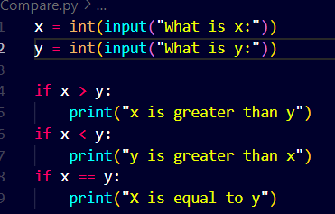

Python comes with several built-in conditionals
> , < , >= , <= , == , != etc
These are used to compare values, variables
We can use conditinals for making decision or asking questions and then decide to do something for one option and another thing for something for some another option.
We are going to do this in the Compare.py
Here we are asking questions to the user every time but this is repeatitive and annoying so we can write the code in a better way
`

So we use elif instead
Now we notice the output or the behaviour is going to remain the same.

But this is building a foundation of better coding and saving us a little bit of time. This will result when we code much larger program.
More precisely the algorithm for the program changes.
Nowhere We dont need to ask 3 questions actually so what we can do is use else this will work as if 2 conditions for this particular program are false then the last would be by default true, it has to be true.
See..

Perhaps the output is going to be the same.


See the above example this shows another usage of if else.
Now see this much better use of available operators.


Another important keyword in python is "and"


but watch this code can be written in a much better way as the readabiity of the current version of the code is less.


Watch how the code significantly becomes more clear to understand as it directly asks tht if the score is between a certain range of category
Now this can be improved more watch how !

Here the output remains the same but watch how instead of asking 2 questions everytime now I Am asking only 1 question that if is the score greater than or equal to a certain limit.
We will see parity checker now , if a number is even or odd


Now see how we improve this code by making our own function for checking if a particular number is even or odd


See how the function works we created a main function and use another function inside the main function
And now see the imporvised version, this can be improvised even further just watch the below 2 versions


Output remians the same for both but the readability improves as there is nt going to be a mistake in theboolean part of the above function
We use return much betterly
Now see match for matching things:


here there maybe a large number of matches to be divided in their respective classes so what can we do here,
here match comes to rescue , we can use the macth keyword to classify things into their specific classes based upon their repective characteristics
Watch how:


But here in the above code there is no case for Rahul or more specific for any name that is unknown to the code so the program completely ignoresit and prints no output
In that case what we can do is add a catch for all such unknown names:
watch how:


We can avoid using different cases for each of the names who have the same house category how? Let's see...